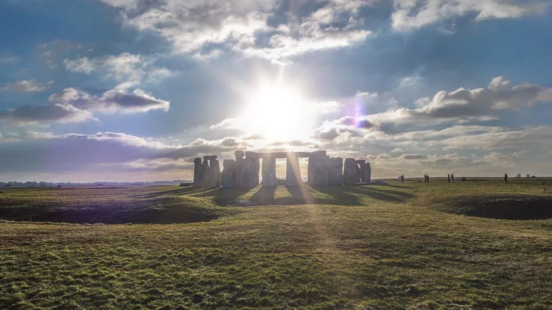

Posted 9h ago
Stonehenge
Imagine going back thousands of years and showing off the cool astronomical functions of your smartphone. It can tell the date and time with incredible accuracy. It can pinpoint your location. It can even pull up a map of the stars, tell you the phases of the moon, and predict the next major astronomical event.
These ancient people would be amazed, right? It turns out, they probably wouldn't be all that impressed — because they could do all of those things, too.
The most recent example of a portable, all-in-one, multifunction astronomical tool is the astrolabe. From the Greek words for "star" and "taker," the astrolabe was used from ancient times all the way up to the early modern period. A useful tool and fashion accessory rolled into one, the astrolabe was a solid disk of metal with a series of dials, pointers and engravings. The astrolabe could do it all for the wandering type: It could tell the time of day based on the sun's position, provide coordinates based on the positions of certain guide stars, predict when the sun would rise or set, and more. As with your smartphone, you wouldn't ever want to leave home without it.
Prior to the development of the highly portable astrolabe, ancient people still had high-precision instruments, but they were usually either larger or closely guarded by a few key individuals. One example is the Antikythera mechanism, which dates back to around 200 to 100 B.C. and was discovered in a shipwreck in 1901. The complex set of gears within the mechanism allowed the user to predict lunar eclipses, track the movements of all the visible planets, tell you when certain Olympic-style games were scheduled to happen, and calculate two very critical cycles: the Metonic and Saros cycles.
The Metonic cycle arises from the fact that a single solar year (the time between one spring equinox and the next) is almost, but not quite, the same length as 12 complete lunar months (the time between one new moon and the next). Since ancient times, astronomers have quickly noted the regularity and predictability of these two separate rhythms in the sky, and ancient calendars place a lot of emphasis on translating between lunar and solar calendars, especially for scheduling feast days to close any gaps. Every 19 years, however, the lunar and solar calendars resynchronize on their own, which is known as the Metonic cycle, so it was helpful to know where you were in that cycle.
The Saros cycle measured the time between eclipses, whether a lunar or solar eclipse. Roughly every 223 lunar months, or 6,600 days, an eclipse repeats. Ancient people didn't have the sophisticated understanding of gravity to predict if the eclipse would be full or partial, but they did have enough astronomical knowledge to recognize that if an eclipse happened, there was a good chance of another one happening 6,600 days later.
An example of the importance of these kinds of cycles can be seen in the Berlin gold hat, an artifact dated to 1000 to 800 B.C. The tall, cone-shaped hat is adorned with repeated motifs of astronomical symbols and was obviously meant to be worn in religious and/or political ceremonies. The hat is just big enough to contain an entire Metonic cycle depicted in its rows — a handy tool when you might be responsible for maintaining your community's religious calendar.
Humanity's ability to track and monitor celestial cycles stretches back into prehistory, as well. Perhaps the most famous astronomical monument is Stonehenge, dated to 3000 to 1500 B.C. The alignment of special "keystones" allowed observers to mark the precise date of solstices, signaling the beginning of new years and new seasons. If you've ever been stuck inside all winter, where each day feels exactly like the last and you've lost track of when spring will ever arrive, you can appreciate our ancestors' desire to make a giant clock out of stone to solve that problem.
The oldest alleged calendar is a carving found on an ivory mammoth tusk, dated to an astonishing 30000 B.C. While there is debate about what the carvings mean, one side features a figure of a man, who holds a pose suspiciously similar to the constellation Orion (which, by the way, almost all cultures around the world associate with a person). On the opposite side are 86 markings. While hotly debated, one potential explanation for the number 86 is that the typical human pregnancy lasts one year, minus 86 days. And it just so happens that at the location where the tusk was found, the star Betelgeuse, the shoulder of Orion, is visible above the horizon for 86 days every year.
Perhaps those prehistoric people found a connection between the motion of this celestial object and our Earthly rhythms — something we have preserved to the modern day, every time we set our schedule to the rising and setting of the sun and the annual cycle of the seasons.